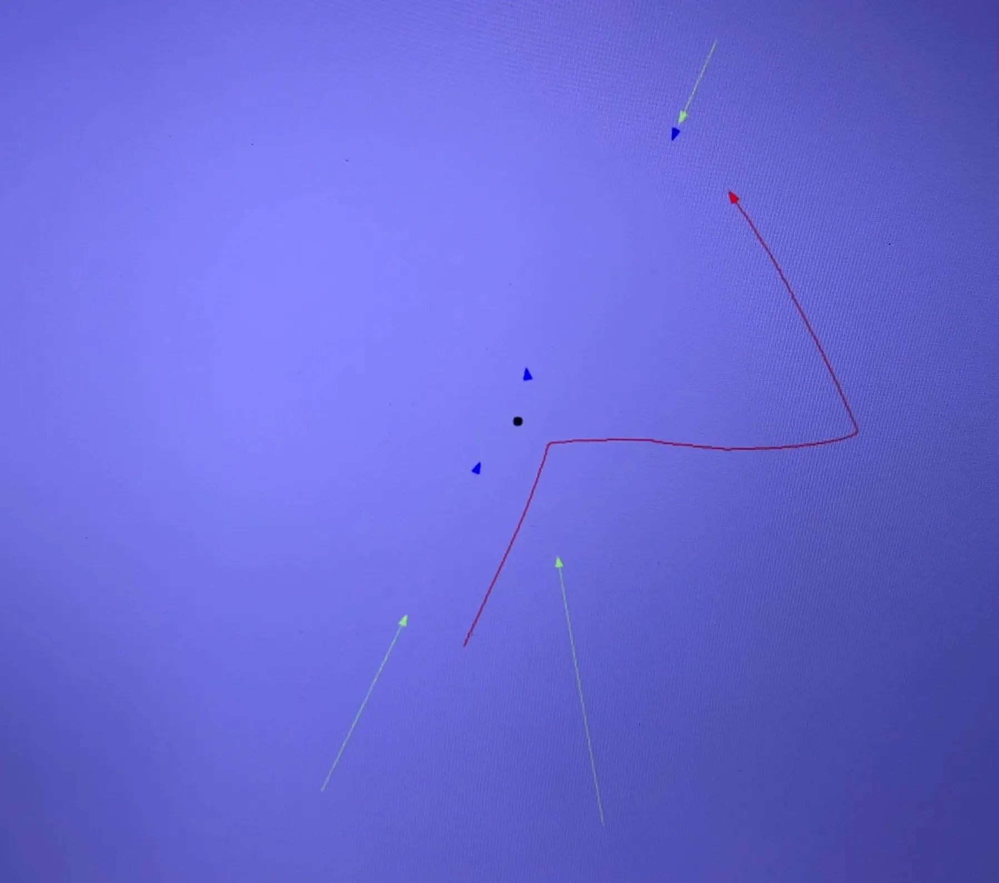
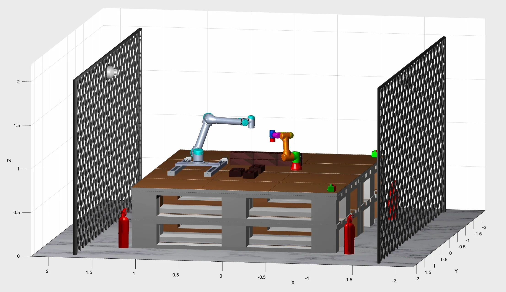
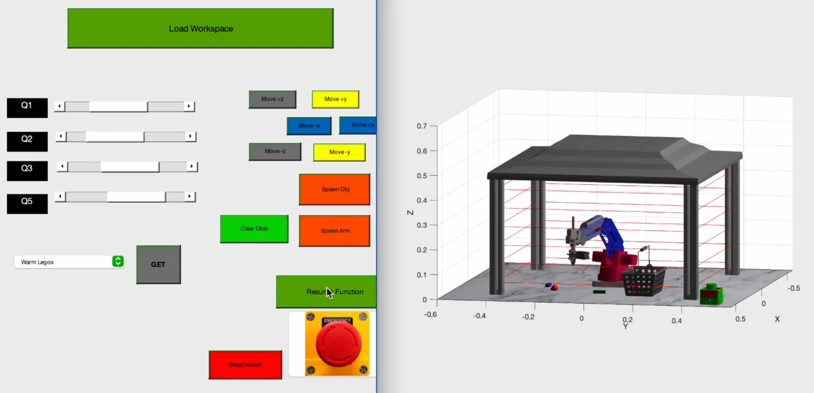
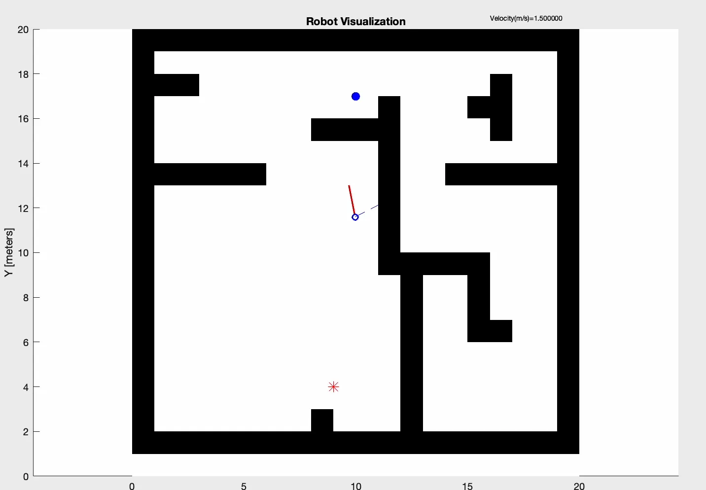
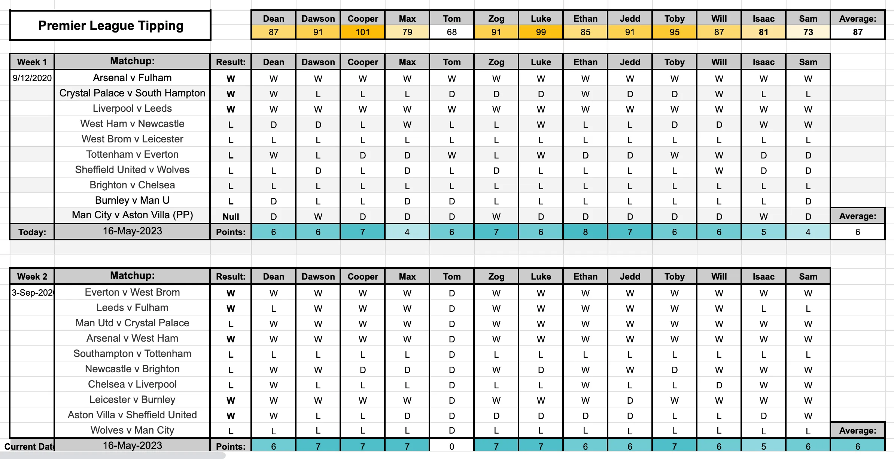
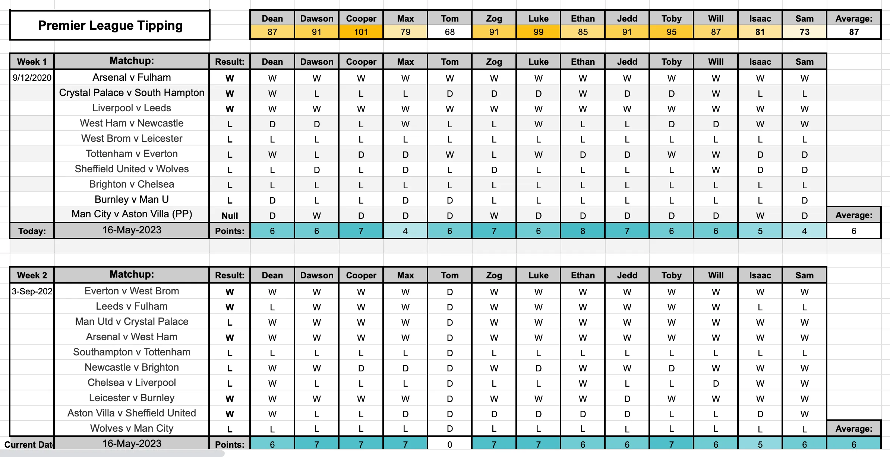

Hey! I'm Dean.
Your next great hire.

Unveiling my AAVI capstone project at the 2024 UTS Capstone Showcase
About Me
I'm a recent Mechatronic Engineering and International Studies graduate with research experience and
four years working in technical and non-technical roles at the University of Technology Sydney.
My capstone project applied the YOLO-NAS foundation CNN model to autonomously detect defects in aircraft imagery and achieved the best results in the current literature. Please reach out if you are interested in this work.
My aim is to contribute to the development of humane technology to create a better future for ourselves and generations to come.
View My Resume
My capstone project applied the YOLO-NAS foundation CNN model to autonomously detect defects in aircraft imagery and achieved the best results in the current literature. Please reach out if you are interested in this work.
My aim is to contribute to the development of humane technology to create a better future for ourselves and generations to come.


Explore My Other Projects




 

Missile Interceptor
C++, OOP, DSA, Multithreading and Ubuntu
Programming for Mechatronic Systems
Programming for Mechatronic Systems
Pick and Place Robots
MATLAB, IK, FK, UR3 and UR5
Industrial Robotics - High Distinction
Industrial Robotics - High Distinction
The Sort Master
MATLAB, RMRC, Inverse Kinematics and Dobot Robot
Industrial Robotics - High Distinction
Industrial Robotics - High Distinction
Autonomous Maze Navigation
Arduino, C++, Embedded Systems and PID Control
Mechatronics 2 - High Distinction
Mechatronics 2 - High Distinction
Employee Availability
Google Sheets, Automation, Employee Scheduling, Custom Business Solution
Premier League Prediction
Google Sheets, Automation, Data Analysis, Sports Analytics